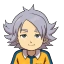
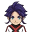
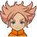

Tornado de Fuego (ファイアトルネード, Fire Tornado en japonés) es una supertécnica de tiro que aparece en el anime, manga y a partir del primer videojuego de Inazuma Eleven.Linea Original: El usuario eleva el balón y salta dando varios giros en al aire, envuelto en un fuego intenso, entonces chuta el balón haciendo que este se prenda en llamas y mientras avanza va dejando detrás de él una gran estela de fuego. Linea Alterna: El usuario eleva el balón con una voltereta y salta dando varios giros en al aire, envuelto en un fuego intenso, entonces chuta el balón haciendo que este se prenda en llamas y mientras avanza va dejando detrás de él una gran estela de fuego.
Mano Celestial (ゴッドハンド, God Hand en japonés; Mano Fantasma en Latinoamérica por el doblaje mexicano de la Saga de Mark) es una supertécnica de atajo que aparece en el anime, manga y a partir de los videojuegos de Inazuma Eleven. Es una de las supertécnicas más famosas de la franquicia. Creada originalmente por David Evans, es la primera técnica que aprende Mark Evans. El usuario carga energía en la mano, después saca una mano luminosa por encima de su cabeza, gira con el brazo, empeña sus agallas en la mano y empieza a detener cualquier disparo.
Ventisca Eterna (エターナルブリザード, Eternal Blizzard en japonés, Eterna Ventisca en Latinoamérica en el anime por el doblaje mexicano de la Saga de Mark) es una supertécnica de tiro introducida en la segunda temporada de Inazuma Eleven y a partir de los videojueos de Inazuma Eleven 2. El usuario da unos cuantos toques al balón y así se empieza a cubrir de hielo. Luego salta, gira en el aire, y cuando el balón está cubierto de hielo, chuta.
Supertécica usada por los siguientes personajes:



La Tierra: Infinito (ジ･アース∞, The Earth ∞ en japonés; trad. La Tierra Infinita) es una supertécnica de tiro combinado que aparece en los videojuegos y anime de Inazuma Eleven GO Galaxy. Los usuarios se preparan y canalizan la energía de los totems cercano, entonces saltan y chutan el balón dentro de una gran bola de energía. Aparece en el Episodio 43 para anotar el gol de la victoria contra la Flota Ixar.
Ruptura Relámpago (イナズマブレイク Inazuma Break en japonés, Relámpago Destructor en Hispanoamérica) es una supertécnica de tiro combinado que aparece a partir de la primera temporada del anime y del primer videojuego de Inazuma Eleven. El usuario principal chuta al cielo y la pelota se vuelve morada, caen rayos morados y amarillos junto a la pelota. Luego dos compañeros y el principal chutan a la vez. En capítulo especial de anime Inazuma Eleven Reloaded. Primero se oscurece el cielo (como cuando hay tormenta). El usuario principal (Jude Sharp) patea la pelota al cielo y en un breve momento de pausa el resto y él le pegan desde arriba hacía abajo de chilena.